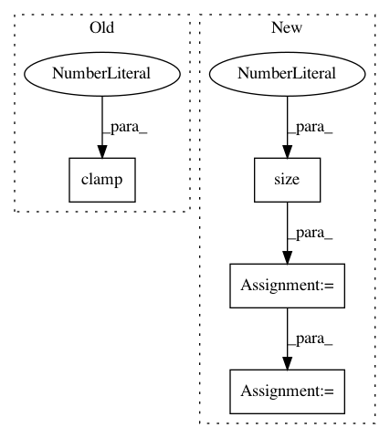

c2165224d198450a3b4329ae099a772aa65d51c5,fairseq/models/levenshtein_transformer.py,LevenshteinTransformerModel,forward_decoder,#LevenshteinTransformerModel#Any#Any#Any#Any#,318
Before Change
if max_ratio is None:
max_lens = output_tokens.new(output_tokens.size(0)).fill_(255)
else:
max_lens = (
(~encoder_out["encoder_padding_mask"]).sum(1) * max_ratio
).clamp(min=10)
// delete words
// do not delete tokens if it is <s> </s>
can_del_word = output_tokens.ne(self.pad).sum(1) > 2
After Change
max_lens = output_tokens.new().fill_(255)
else:
if encoder_out["encoder_padding_mask"] is None:
max_src_len = encoder_out["encoder_out"].size(1)
src_lens = encoder_out["encoder_out"].new(bsz).fill_(max_src_len)
else:
src_lens = (~encoder_out["encoder_padding_mask"]).sum(1)
max_lens = (src_lens * max_ratio).clamp(min=10).long()
// delete words
// do not delete tokens if it is <s> </s>
can_del_word = output_tokens.ne(self.pad).sum(1) > 2
In pattern: SUPERPATTERN
Frequency: 3
Non-data size: 4
Instances
Project Name: pytorch/fairseq
Commit Name: c2165224d198450a3b4329ae099a772aa65d51c5
Time: 2019-10-08
Author: changhan@fb.com
File Name: fairseq/models/levenshtein_transformer.py
Class Name: LevenshteinTransformerModel
Method Name: forward_decoder
Project Name: Scitator/catalyst
Commit Name: 1a73a1367fedfa8368b6c42103e60e1b370bc14a
Time: 2019-04-19
Author: scitator@gmail.com
File Name: catalyst/contrib/criterion/focal_loss.py
Class Name: FocalLoss
Method Name: forward